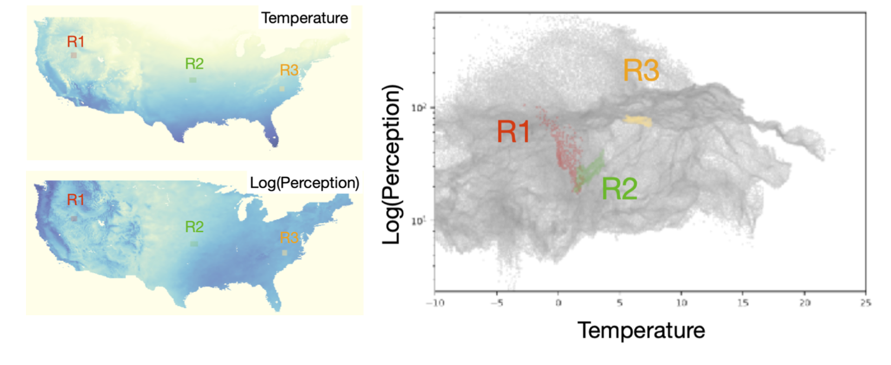
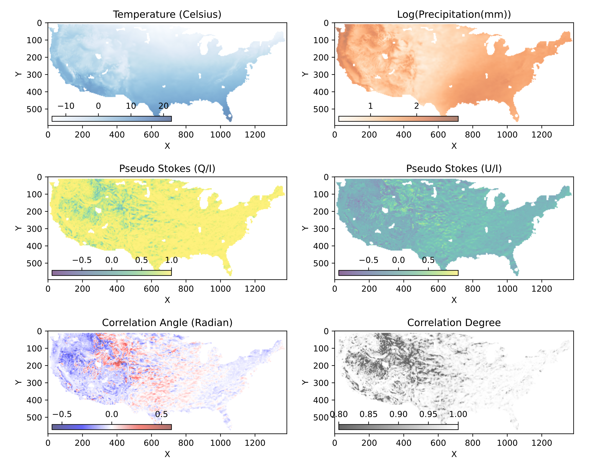

Concept & Methods¶
Adjacency-induced correlations:¶
The method is based on the observation that image values measured in adjacent locations often exhibit stronger correlations compared to image values measured over the whole region. Take the following example of the temperature and perception data from the North America: When plotted together, we reveal a phase space where temperature and precipitation are not well-correlated. To reveal regularities, we choose three boxes (R1, R2 and R3) at different locations. From the west to the east, the temperature and precipitation exhibit correlations ranging from negative, to positive, then to weak correlations. These local correlations are undermined in the global correlation plot.
{kind=link}
Adjacency-induced correlations: Values measured in small boxes, R1, R2, and R3 are stronger than correlations measured over the whole region.
The adjacent correlation analysis is a method to reveal these local correlations in the phase space. The adjacent correlation map provide maps of correlations in the space were the quantities are measured.
Given two images, \(p_1(x, y)\) and \(p_2(x, y)\), the adjacency correlation map contains a correlation angle map,
a map of the correlation degree:
where \(l_{min}\) and \(l_{max}\) are the minimum and maximum lengths of the correlation ellipse, and a correlation coefficient map:
which is the equivalent to the Pearson correlation coefficient.
The adjacent correlation plot is a representation of these correlations in the phase space.
Superimpose correlations using Stokes parameters¶
To superimpose the adjacent correlation vectors, we can use Stokes parameters. The Stokes parameters are a set of four parameters that describe the polarization state of light. In this case, we can use them to represent the correlation vectors.
{kind=link}
In the \(p_1-p_2\) space, the correlation vector is
where the pseudo-Stokes parameters are defined as:
The stokes parameters are used to superimpose these correlation vectors, and in the last step, the correlation angle and degree can be computed from the stokes parameter using
From which, \(E_x\) and \(E_y\) can be computed.